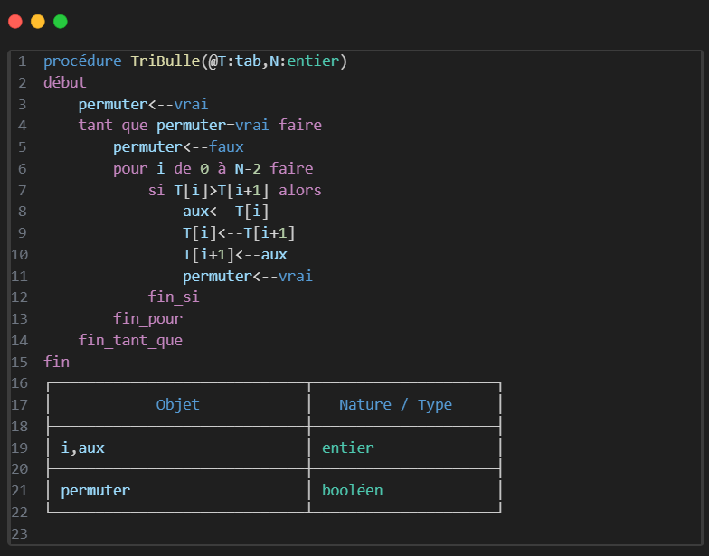

Le tri à bulles est un algorithme de tri très simple
Le but est d’ordonner les éléments d’un tableau.
Fonctionnement :
Parcourir tout le tableau en comparant deux éléments à la fois , et les permuter si nécessaire.
En faisant cette procédure, l’élément le plus grand (ou le plus petit, tout dépend si c’est un tri croissant ou décroissant) est placé à l’extrémité du tableau. Cette dernière case est bien placée, on arrête lorseque
Voici une animation qui montre cela :
Code algo:

Pour changer l'ordre du tri il suffit de changer le signe ">" pour un "<"